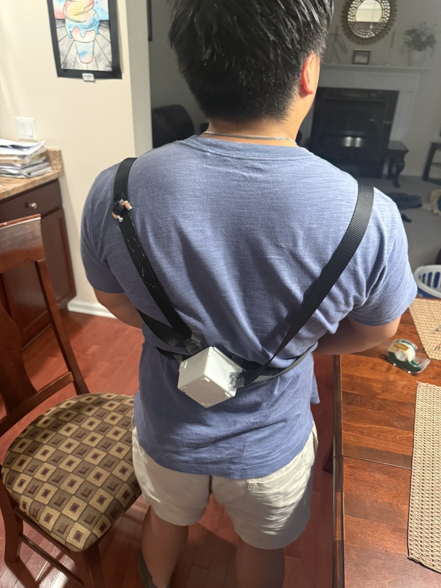
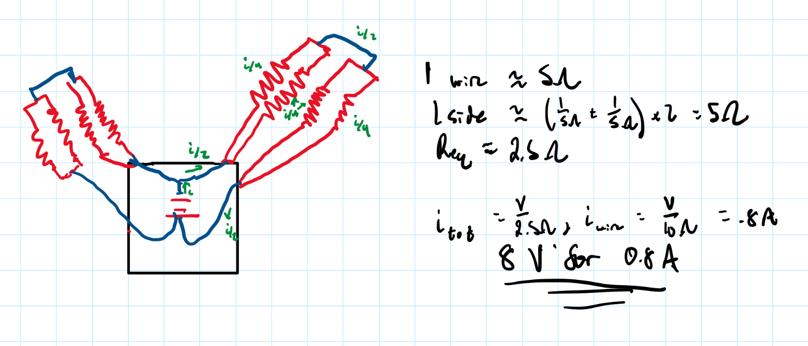
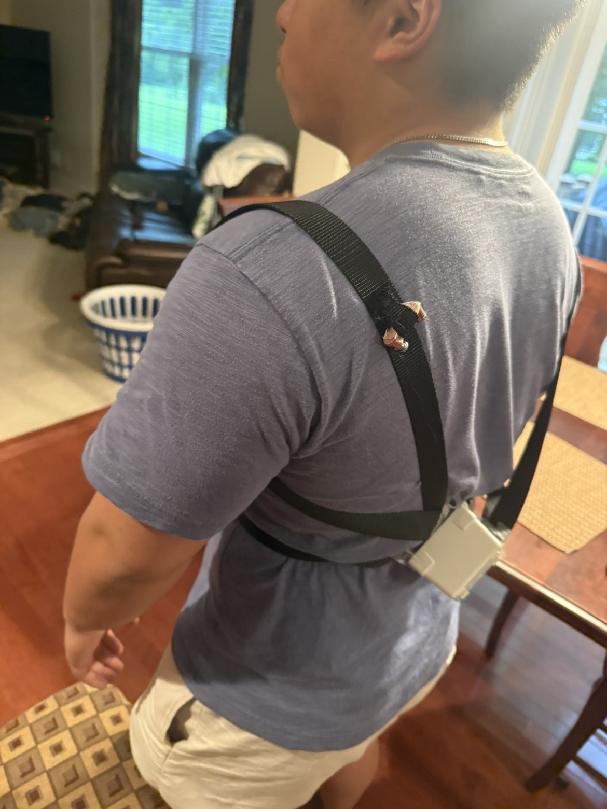
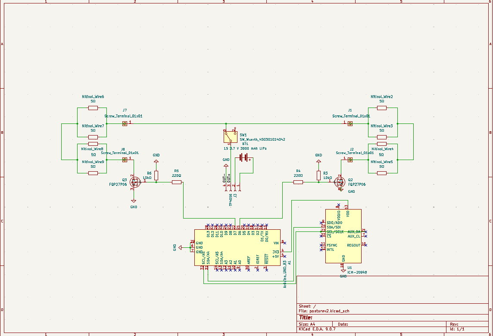

Posture Pro — Nitinol-Based Active Posture Corrector
A proof-of-concept wearable exploring active posture correction using IMU-based slouch detection and electrically actuated nitinol. Unlike passive posture braces that continuously restrict movement, Posture Pro detects poor posture and selectively tensions two shoulder straps only when correction is needed with a novel nitinol based acturator, creating a compact and silent active-feedback system.

A posture corrector with an active pull
Typical posture correctors use passive elastic straps that continuously resist forward shoulder movement. Posture Pro instead makes that corrective force active, applying tension only when poor posture is detected. The actuator is built around nitinol, a nickel-titanium shape-memory alloy (SMA) that undergoes a solid-state phase transformation when heated, returning toward its trained shape and producing contraction. By electrically heating the wire through Joule heating, this behavior can be used as a compact linear actuator without motors or gears. The sensing-to-actuation workflow is shown below:
Thought Process
Wire diameter was one of the first major design decisions because it directly affects the actuator's pull-force capacity, electrical demand, and thermal response. Fort Wayne Metals recommends an application stress of 100–150 MPa for optimal actuation performance and provides approximate activation currents for each wire diameter. Using that stress range with each wire's cross-sectional area (F = σA) gives a useful first-order estimate of pull force. Thicker wire can support more force, but it requires substantially more current and generally takes longer to cool and reset after a correction. For a battery-powered wearable, the goal was therefore to select the thinnest wire that could still provide useful corrective force.
| Wire diameter | Activation current | Estimated pull force (100–150 MPa) | Cooling / surface area |
|---|---|---|---|
| 0.0079 in | ≈ 0.6 A / wire | ≈ 0.7–1.1 lbf | Fast cooling; highest surface-area-to-volume ratio |
| 0.0098 in ≈ 0.010 in | ≈ 0.8 A / wire | ≈ 1.1–1.7 lbf | Fast cooling while retaining useful force |
| 0.0157 in | ≈ 1.7 A / wire | ≈ 2.8–4.2 lbf | Slower cooling; lower surface-area-to-volume ratio |
Use thin wire, then multiply the available force through routing
I selected approximately 0.010 in nitinol rather than moving to a thicker, higher-current wire. The actuator uses eight active 1 ft nitinol wires, split evenly between the left and right sides of the wearable. On each side, two 1 ft wires run outward in parallel and are connected in series with two additional 1 ft wires running back toward the central electronics. This creates a four-wire out-and-back actuator on each side while allowing pairs of thin nitinol wires to share the mechanical load.
The opposite side uses the same arrangement, giving eight active 1 ft wire sections in total. In the ideal mechanical case, the parallel wire pairs increase the available force while retaining the faster thermal response of the thinner wire. The actual force delivered to the shoulder straps depends on equal preload, routing geometry, friction, and the mechanical attachment points.

Routing determines the equivalent resistance — and therefore the supply voltage
Once the wire diameter and routing were chosen, I estimated the electrical requirement from the wire geometry. Starting with the resistivity relation,
R = ρL / A
Using an estimated nitinol resistivity of ρ ≈ 8.0 × 10−7 Ω·m, a wire length of L = 1 ft = 0.3048 m, and a diameter of approximately d = 0.0098 in = 2.49 × 10−4 m, the wire cross-sectional area is:
A = πd2/4 ≈ 4.87 × 10−8 m2
R ≈ (8.0 × 10−7 Ω·m)(0.3048 m) / (4.87 × 10−8 m2) ≈ 5.0 Ω
This first-order estimate was also checked experimentally with a multimeter, which measured approximately 5.2 Ω across a 1 ft section. On each side, the two outgoing 1 ft wires are in parallel, and that parallel pair is connected in series with the two parallel return wires:
Rside ≈ (5 Ω ∥ 5 Ω) + (5 Ω ∥ 5 Ω) = 2.5 Ω + 2.5 Ω = 5 Ω
The left and right sides use the same four-wire topology. If both sides are driven in parallel from the same source, the complete actuator resistance is:
Req ≈ 5 Ω ∥ 5 Ω = 2.5 Ω
Because each 0.010 in wire requires approximately 0.8 A for activation, each two-wire parallel pair requires approximately 1.6 A. That same 1.6 A flows through both series-connected parallel pairs on a side. With both sides driven simultaneously, the source therefore supplies approximately 3.2 A total. The corresponding first-order supply estimate is:
V = ItotalReq ≈ (3.2 A)(2.5 Ω) ≈ 8 V
P = VI ≈ (8 V)(3.2 A) ≈ 25.6 W
This gave an initial design target of approximately 8 V, 3.2 A, and 26 W when both sides are activated simultaneously. The calculation is intentionally first-order; connection resistance, actual wire length, temperature-dependent resistance, and assembly tolerances shift the measured value in the physical actuator.
≈ 4.4–6.8 lbf per shoulder and ≈ 0.48–0.60 in of contraction
Each 0.010 in nitinol strand has an estimated force capacity of approximately 1.1–1.7 lbf. With two strands acting in parallel on each shoulder, the ideal combined pull is approximately 4.4–6.8 lbf per shoulder. For a 1 ft active wire, roughly 4–5% recoverable strain corresponds to approximately 0.48–0.60 in of theoretical contraction.
This force estimate depends on the parallel wires being cut and preloaded to essentially the same tension. If one strand is even slightly slack, it will not share the load equally, so the theoretical force addition no longer holds (Foreshadowing...).
A wearable built around one central module
The prototype used off-the-shelf hardware to validate the idea, but the intended form factor is much simpler: one small enclosure centered on the upper back, with two straps routed over the shoulders like a backpack. The enclosure would contain the IMU, microcontroller, battery, and nitinol drive electronics.


From posture sensing to shape-memory contraction
The first electronics build prioritized accessibility and iteration over size. A microcontroller and IMU provided the sensing and control layer, while the nitinol actuator was powered separately through MOSFET switching. The MOSFET gates were controlled by the MCU, allowing the microcontroller to complete the high-current actuator circuit when poor posture was detected. A TP4056 handled LiPo charging, while an LTC1871 boost converter stepped the battery voltage up to the level required to drive the nitinol wires.


First prove that the actuator can pull
Before relying on the wearable geometry, I tested the nitinol actuation independently. The electronics were mounted on the table while the nitinol wires were suspended. When energized, the wires produced a small but visible upward pull.
The electrical-to-mechanical chain worked.
The test demonstrated that the electronics could activate the nitinol and produce mechanical contraction, with the wire becoming noticeably hot during activation. However, the resulting pull was not straight upward because the individual wires were not preloaded to the same tension; some strands remained partially slack and therefore did not share the load evenly. Achieving consistent preload proved difficult with 0.010 in nitinol wire, particularly when securing the extremely thin strands into screw terminals and copper lugs.
The real challenge was force transfer
The proof of concept revealed several practical limitations that would need to be solved before the architecture could become a reliable wearable.
Uneven wire tension
The nitinol was only about 0.01 in in diameter, making repeatable cutting, termination, and assembly difficult. Small length differences created unequal preload between parallel wires, so they did not share force evenly and contraction was transferred inefficiently to the straps.
Wire-to-wire contact
The extremely thin wires were difficult to keep separated. When sections touched, unintended electrical paths could form, so the full intended wire length did not heat consistently. A future design needs reliable electrical and physical isolation between actuator paths.
Oversized electronics
The development-board stack was useful for proving the architecture but far too large for a practical wearable. The sensing, MCU, switching, charging, and power circuitry ultimately need to be consolidated into a compact custom PCB.
From proof of concept toward a product
Controlled preload
Use a fixture or adjustable termination system to establish repeatable nitinol lengths and pretension before the actuator is integrated into the straps.
Isolated actuator paths
Physically separate or individually insulate the nitinol conductors so the designed current path remains consistent during heating and contraction.
Integrated electronics
Replace the development boards with a compact PCB combining the MCU, IMU, power switching, battery management, and connectors inside the central back module.
Evaluate the concept for patent protection
The posture-correction problem itself is well established; the potential novelty is in the solution: combining posture sensing with compact nitinol actuation to actively tension a wearable harness. A future development step is a formal prior-art search to determine whether this specific implementation contains protectable claims. Patentability has not yet been established.
Final Thoughts
This project was a valuable introduction to working with smart materials and showed me how much more intricate a nitinol-based system can be than it first appears. At this scale, small differences in wire length, preload, termination, and routing had a noticeable effect on the actuator’s behavior. It reinforced that when working with extremely thin wires and small displacements, precision in fabrication and assembly matters just as much as the underlying design.